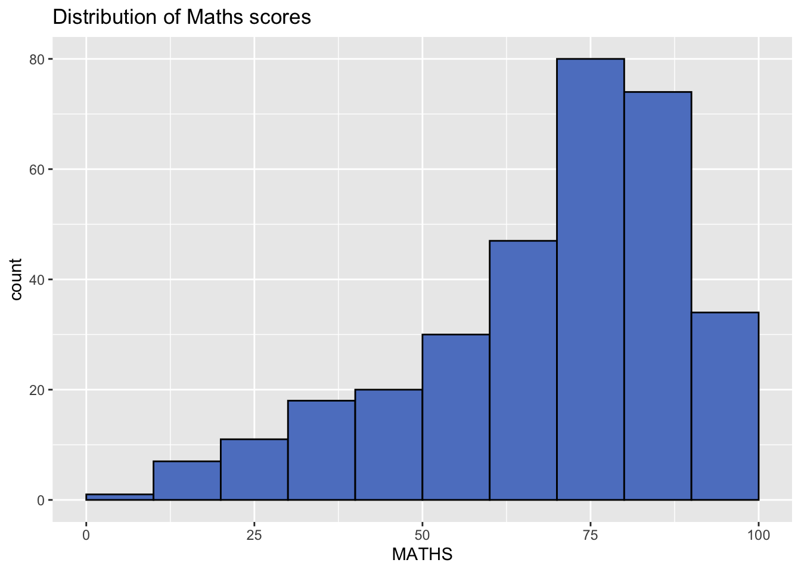
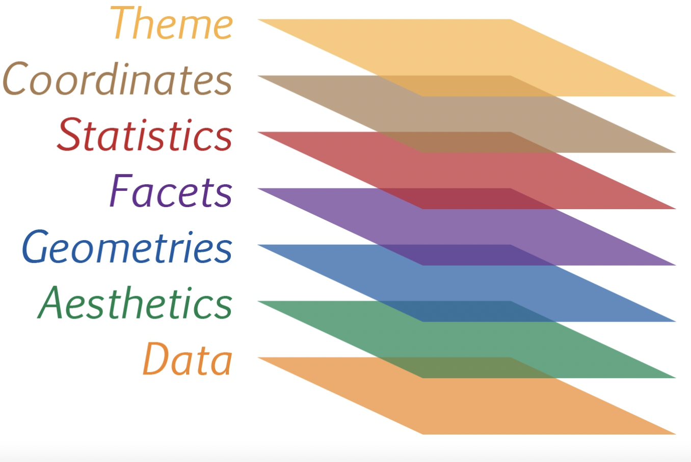
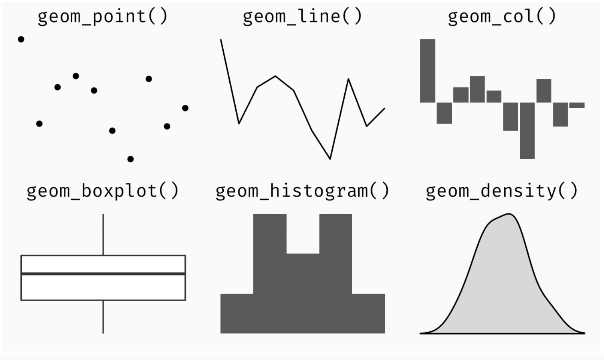
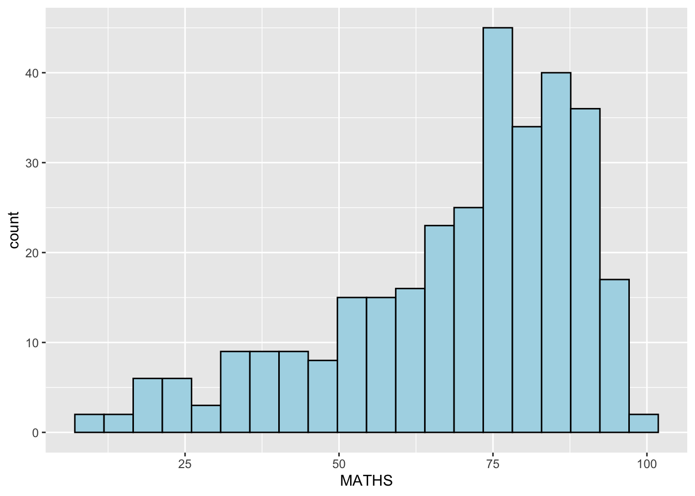
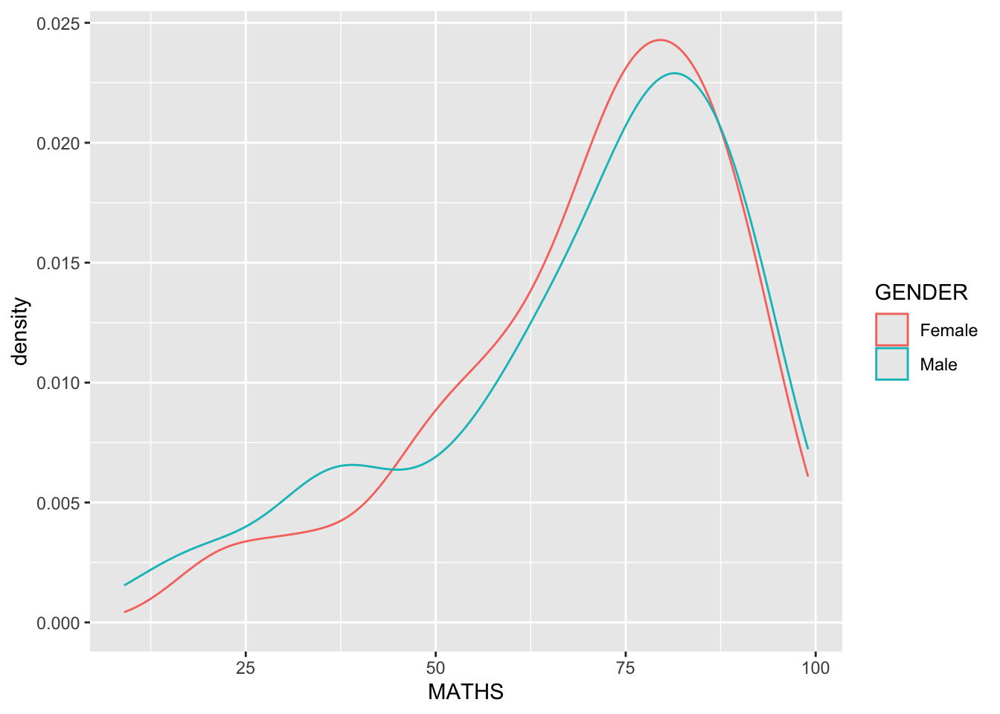
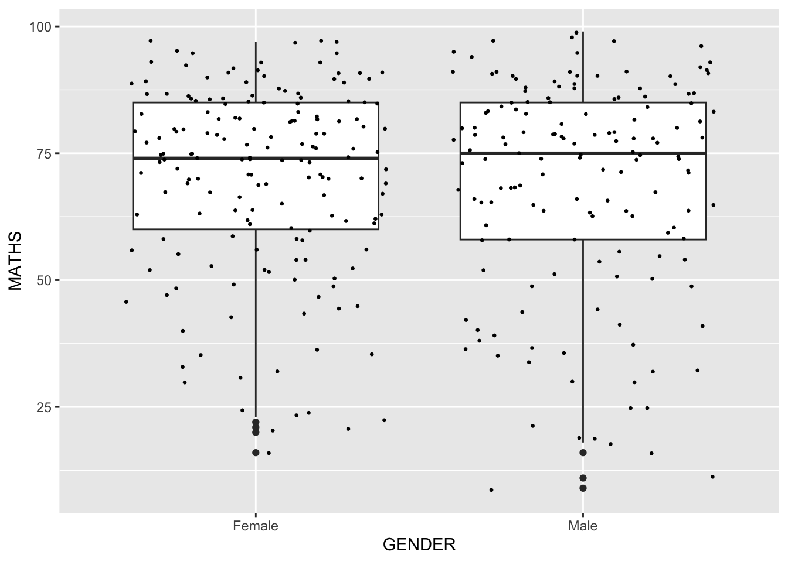

pacman::p_load(tidyverse)1 A Layered Grammar of Graphics: ggplot2 methods
Overview
In this chapter, we will learn the basic principles and essential components of ggplot2, and gain hands-on experience on using these components to plot statistical graphics based on the principle of Layered Grammar of Graphics
By then end of this chapter, we will be able to apply the essential graphical elements provided by ggplot2 to create elegant and yet functional statistical graphics.
1 Getting Started
1.1 Loading R package
1.2 Importing Data
exam_data <- read_csv("data/Exam_data.csv")Rows: 322 Columns: 7
── Column specification ────────────────────────────────────────────────────────
Delimiter: ","
chr (4): ID, CLASS, GENDER, RACE
dbl (3): ENGLISH, MATHS, SCIENCE
ℹ Use `spec()` to retrieve the full column specification for this data.
ℹ Specify the column types or set `show_col_types = FALSE` to quiet this message.1.3 Introducing ggplot
ggplot2 is an R package for creating data-driven graphics based on The Grammar of Graphics. It is also part of the tidyverse family specially designed for visual exploration and communication.
For more information, please visit ggplot2 link
1.3.1 R Graphics VS ggplot
First, let us compare how R Graphics, the core graphical functions of Base R and ggplot plot a simple histogram.
hist(exam_data$MATHS, col = '#5e82c9')
ggplot(data=exam_data, aes(x = MATHS)) +
geom_histogram(bins=10,
boundary = 100,
color="black",
fill='#5e82c9') +
ggtitle("Distribution of Maths scores")
1.4 Grammar of Graphics
Grammar of Graphics is a general scheme for data visualization which breaks up graphs into semantic components such as scales and layers. It was introduced by Leland Wilkinson (1999) Grammar of Graphics, Springer. The grammar of graphics is an answer to a question:
What is a statistical graphic?
In the nutshell, Grammar of Graphics defines the rules of structuring mathematical and aesthetic elements into a meaningful graph.
There are two principles in Grammar of Graphics, they are:
Graphics = distinct layers of grammatical elements
Meaningful plots through aesthetic mapping

A short description of each building block are as follows:
Data: The dataset being plotted.
Aesthetics take attributes of the data and use them to influence visual characteristics, such as position, colours, size, shape, or transparency.
Geometrics: The visual elements used for our data, such as point, bar or line.
Facets split the data into subsets to create multiple variations of the same graph (paneling, multiple plots).
Statistics, statiscal transformations that summarise data (e.g. mean, confidence intervals).
Coordinate systems define the plane on which data are mapped on the graphic.
Themes modify all non-data components of a plot, such as main title, sub-title, y-aixs title, or legend background.
1.5 Essential Grammatical Elements in ggplot2: data
Let us call the `ggplot()` function using the code chunk on the right.ggplot(data=exam_data)
A blank canvas appears.
ggplot()initializes a ggplot object.The data argument defines the dataset to be used for plotting.
If the dataset is not already a data.frame, it will be converted to one by
fortify().
1.6 Essential Grammatical Elements in ggplot2: Aesthetic mappings
The aesthetic mappings take attributes of the data and and use them to influence visual characteristics, such as position, colour, size, shape, or transparency. Each visual characteristic can thus encode an aspect of the data and be used to convey information.
Code chunk below adds the aesthetic element into the plot.
ggplot(data=exam_data, aes(x= MATHS))
Note: ggplot includes the x-axis and the axis’s label.
1.7 Essential Grammatical Elements in ggplot2: geom
Geometric objects refer to the actual marks placed on the plot. A plot must contain at least one geometric object in order to have an output. There’s no limit on the number of geometric objects we can add.
+ is used to add additional geometric objects to the code chunk. The image below shows examples of some geometric objects.

1.7.1 Geometric Objects: geom_bar
The code chunk below plots a bar chart by using geom_bar().
ggplot(data=exam_data,
aes(x=RACE)) +
geom_bar()
1.7.2 Geometric Objects: geom_dotplot
In a dot plot, the width of a dot corresponds to the bin width (or maximum width, depending on the binning algorithm), and dots are stacked, with each dot representing one observation.
In the code chunk below, geom_dotplot() of ggplot2 is used to plot a dot plot.
ggplot(data=exam_data,
aes(x = MATHS)) +
geom_dotplot(dotsize = 0.5)Bin width defaults to 1/30 of the range of the data. Pick better value with
`binwidth`.
Note: The code chunk below performs the following two steps:
scale_y_continuous() is used to turn off the y-axis, and
binwidth argument is used to change the binwidth to 2.5.ggplot(data=exam_data,
aes(x = MATHS)) +
geom_dotplot(binwidth=2.5,
dotsize = 0.5) +
scale_y_continuous(NULL,
breaks = NULL) 
1.7.3 Geometric Objects: geom_histogram()
In the code chunk below, geom_histogram() is used to create a simple histogram by using values in MATHS field of exam_data.
ggplot(data=exam_data,
aes(x = MATHS)) +
geom_histogram() `stat_bin()` using `bins = 30`. Pick better value with `binwidth`.
Note: Note that the default bin is 30.
1.7.4 Modifying a geometric object by changing geom()
In the code chunk below,
- bins argument is used to change the number of bins to 20,
- fill argument is used to shade the histogram with light blue color, and
- color argument is used to change the outline colour of the bars in black
ggplot(data=exam_data,
aes(x= MATHS)) +
geom_histogram(bins=20,
color="black",
fill="light blue") 
1.7.5 Modifying a geometric object by changing aes()
- The code chunk below changes the interior colour of the histogram (i.e. fill) by using sub-group of aesthetic().
ggplot(data=exam_data,
aes(x= MATHS,
fill = GENDER)) +
geom_histogram(bins=20,
color="grey30")
Note: This approach can be used to colour, fill and alpha of the geometric.
1.7.6 Geometric Objects: geom-density()
geom-density() computes and plots kernel density estimate, which is a smoothed version of the histogram.
It is a useful alternative to the histogram for continuous data that comes from an underlying smooth distribution.
The code below plots the distribution of Maths scores in a kernel density estimate plot.
ggplot(data=exam_data,
aes(x = MATHS)) +
geom_density() 
The code chunk below plots two kernel density lines by using colour or fill arguments of aes()
ggplot(data=exam_data,
aes(x = MATHS,
colour = GENDER)) +
geom_density()
1.7.7 Geometric Objects: geom_boxplot
geom_boxplot() displays continuous value list. It visualises five summary statistics (the median, two hinges and two whiskers), and all “outlying” points individually.
The code chunk below plots boxplots by using geom_boxplot().
ggplot(data=exam_data,
aes(y = MATHS,
x= GENDER)) +
geom_boxplot() 
Notches are used in box plots to help visually assess whether the medians of distributions differ. If the notches do not overlap, this is evidence that the medians are different.
The code chunk below plots the distribution of Maths scores by gender in notched plot instead of boxplot.
ggplot(data=exam_data,
aes(y = MATHS,
x= GENDER)) +
geom_boxplot(notch=TRUE)
1.7.8 Geometric Objects: geom_violin
Violin plots are a way of comparing multiple data distributions. With ordinary density curves, it is difficult to compare more than just a few distributions because the lines visually interfere with each other. With a violin plot, it’s easier to compare several distributions since they’re placed side by side.
The code below plots the distribution of Maths score by gender using violin plots.
ggplot(data=exam_data,
aes(y = MATHS,
x= GENDER)) +
geom_violin()
1.7.9 Geometric Objects: geom_point()
geom_point() is used to create scatter plots. The code below plots a scatter plot of Maths VS English grades of pupils.
ggplot(data=exam_data,
aes(x= MATHS,
y=ENGLISH)) +
geom_point() 
1.7.10 geom objects can be combined
The code chunk below plots the data points on the boxplots by using both geom_boxplot() and geom_point().
ggplot(data=exam_data,
aes(y = MATHS,
x= GENDER)) +
geom_boxplot() +
geom_point(position="jitter",
size = 0.5) 
1.8 Essential Grammatical Elements in ggplot2: stat
The Statistics functions statistically transform data, usually as some form of summary. For example:
- frequency of values of a variable (bar graph)
- a mean
- a confidence limit
- There are two ways to use these functions:
- add a
stat_()function and override the default geom, or - add a
geom_()function and override the default stat.
- add a
1.8.1 Working with stat()
The boxplots below are incomplete because the positions of the means were not shown.
ggplot(data=exam_data,
aes(y = MATHS, x= GENDER)) +
geom_boxplot()
1.8.2 Working with stat - the stat_summary() method
The code chunk below adds mean values by using stat_summary() function and overriding the default geom.
ggplot(data=exam_data,
aes(y = MATHS, x= GENDER)) +
geom_boxplot() +
stat_summary(geom = "point",
fun.y="mean",
colour ="red",
size=4) Warning: The `fun.y` argument of `stat_summary()` is deprecated as of ggplot2 3.3.0.
ℹ Please use the `fun` argument instead.
1.8.3 Working with stat - the geom() method
The code chunk below adding mean values by using geom_() function and overriding the default stat.
ggplot(data=exam_data,
aes(y = MATHS, x= GENDER)) +
geom_boxplot() +
geom_point(stat="summary",
fun.y="mean",
colour ="red",
size=4) Warning in geom_point(stat = "summary", fun.y = "mean", colour = "red", :
Ignoring unknown parameters: `fun.y`No summary function supplied, defaulting to `mean_se()`
1.8.4 Adding a best fit curve on a scatterplot?
In the code chunk below, geom_smooth() is used to plot a best fit curve on the scatterplot.
ggplot(data=exam_data,
aes(x= MATHS, y=ENGLISH)) +
geom_point() +
geom_smooth(size=0.5)Warning: Using `size` aesthetic for lines was deprecated in ggplot2 3.4.0.
ℹ Please use `linewidth` instead.`geom_smooth()` using method = 'loess' and formula = 'y ~ x'
Note : The default method used is loess.
The default smoothing method can be overridden as shown below.
ggplot(data=exam_data,
aes(x= MATHS,
y=ENGLISH)) +
geom_point() +
geom_smooth(method=lm,
size=0.5)`geom_smooth()` using formula = 'y ~ x'
1.9 Essential Grammatical Elements in ggplot2: Facets
Facetting generates small multiples (sometimes also called trellis plot), each displaying a different subset of the data. They are an alternative to aesthetics for displaying additional discrete variables. ggplot2 supports two types of factes, namely: facet_grid() and facet_wrap.
1.9.1 Working with facet_wrap()
facet_wrap wraps a 1d sequence of panels into 2d. This is generally a better use of screen space than facet_grid because most displays are roughly rectangular.
The code chunk below plots a trellis plot using facet-wrap().
ggplot(data=exam_data,
aes(x= MATHS)) +
geom_histogram(bins=20) +
facet_wrap(~ CLASS)
1.9.2 facet_grid() function
facet_grid() forms a matrix of panels defined by row and column facetting variables. It is most useful when you have two discrete variables, and all combinations of the variables exist in the data.
The code chunk below plots a trellis plot using facet_grid().
ggplot(data=exam_data,
aes(x= MATHS)) +
geom_histogram(bins=20) +
facet_grid(~ CLASS)
1.10 Essential Grammatical Elements in ggplot2: Coordinates
The Coordinates functions map the position of objects onto the plane of the plot. There are a number of different possible coordinate systems to use, they are:
- [`coord_cartesian()`](https://ggplot2.tidyverse.org/reference/coord_cartesian.html): the default cartesian coordinate systems, where you specify x and y values (e.g. allows you to zoom in or out).
- [`coord_flip()`](https://ggplot2.tidyverse.org/reference/coord_flip.html): a cartesian system with the x and y flipped.
- [`coord_fixed()`](https://ggplot2.tidyverse.org/reference/coord_fixed.html): a cartesian system with a "fixed" aspect ratio (e.g. 1.78 for a "widescreen" plot).
- [`coord_quickmap()`](https://ggplot2.tidyverse.org/reference/coord_map.html): a coordinate system that approximates a good aspect ratio for maps.1.10.1 Working with Coordinate
By the default, the bar chart of ggplot2 is in vertical form.
ggplot(data=exam_data,
aes(x=RACE)) +
geom_bar()
The code chunk below flips the horizontal bar chart into vertical bar chart by using coord_flip().
ggplot(data=exam_data,
aes(x=RACE)) +
geom_bar() +
coord_flip()
1.10.2 Changing the y- and x-axis range
The scatterplot on the right is slightly misleading because the y-aixs and x-axis range are not equal.
ggplot(data=exam_data,
aes(x= MATHS, y=ENGLISH)) +
geom_point() +
geom_smooth(method=lm, size=0.5)`geom_smooth()` using formula = 'y ~ x'
The code chunk below fixed both the y-axis and x-axis range from 0-100.
ggplot(data=exam_data,
aes(x= MATHS, y=ENGLISH)) +
geom_point() +
geom_smooth(method=lm,
size=0.5) +
coord_cartesian(xlim=c(0,100),
ylim=c(0,100))`geom_smooth()` using formula = 'y ~ x'
1.11 Essential Grammatical Elements in ggplot2: themes
Themes control elements of the graph not related to the data. For example:
- background colour
- size of fonts
- gridlines
- colour of labels
Built-in themes include: - theme_gray() (default) - theme_bw() - theme_classic()
A list of theme can be found at this link. Each theme element can be conceived of as either a line (e.g. x-axis), a rectangle (e.g. graph background), or text (e.g. axis title).
1.11.1 Working with theme
The code chunk below plot a horizontal bar chart using theme_gray().
ggplot(data=exam_data,
aes(x=RACE)) +
geom_bar() +
coord_flip() +
theme_gray()
A horizontal bar chart plotted using theme_classic().
ggplot(data=exam_data,
aes(x=RACE)) +
geom_bar() +
coord_flip() +
theme_classic()
A horizontal bar chart plotted using theme_minimal().
ggplot(data=exam_data,
aes(x=RACE)) +
geom_bar() +
coord_flip() +
theme_minimal()
1.12 Reference
- Hadley Wickham (2023) ggplot2: Elegant Graphics for Data Analysis. Online 3rd edition.
- Winston Chang (2013) R Graphics Cookbook 2nd edition. Online version.
- Healy, Kieran (2019) Data Visualization: A practical introduction. Online version
- Learning ggplot2 on Paper – Components
- Learning ggplot2 on Paper – Layer
- Learning ggplot2 on Paper – Scale